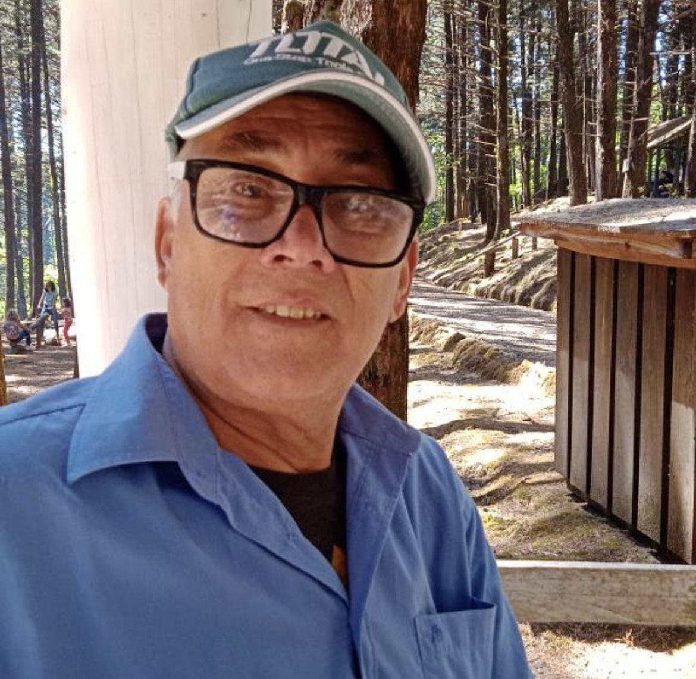

Tipos de Madera
¡Descubre nuestra selección premium de maderas! Desde el versátil Pino hasta el lujoso Teca, ofrecemos la calidad que tu proyecto merece. ¡Explora ahora!
Ferretería y Maderas


¡Descubre nuestra selección premium de maderas! Desde el versátil Pino hasta el lujoso Teca, ofrecemos la calidad que tu proyecto merece. ¡Explora ahora!
Madera económica y versátil.
Ideal para proyectos de bricolaje y construcción.
Fácil de trabajar, pero puede dañarse fácilmente.
Madera para carpinteria
Madera aromática y resistente a insectos.
Perfecta para armarios y muebles de almacenamiento.
Duradera y adecuada para aplicaciones exteriores.
Madera para carpinteria
Madera tropical de alta calidad.
Elegante y duradera, ideal para muebles finos.
Resistente a la putrefacción y a los insectos.
Madera para carpinteria
Madera exótica y lujosa.
Conocida por su belleza y durabilidad.
Perfecta para muebles de exterior y embarcaciones.
Resistente a la putrefacción y al deterioro causado por el agua.
Madera para carpinteria
 "Hace muchos años, en 28 de abril del 2009, en el tranquilo pueblo de Carrillos Bajo de Poás, un padre de tres hijos decidió emprender un nuevo camino. Con valentía y determinación, abrió las puertas de un pequeño local que se convertiría en el corazón de la comunidad. Al principio, el negocio se enfocaba en la venta de maderas y puertas. El emprendedor, motivado por la necesidad de proveer a su familia y ofrecer productos de calidad a sus vecinos, trabajó incansablemente para construir la reputación de su tienda. Pronto, su dedicación y honestidad resonaron entre los habitantes de Carrillos Bajo. Con el tiempo, el emprendimiento evolucionó y se adaptó a las demandas del mercado local. El dueño decidió especializarse en herramientas y ferretería, ampliando así su oferta para satisfacer las necesidades cambiantes de la comunidad. La calidad de los productos y el servicio al cliente excepcional hicieron que el pequeño local se ganara un lugar especial en los corazones de los habitantes de Carrillos Bajo. La tienda se convirtió en mucho más que un simple comercio; se convirtió en un punto de encuentro donde las personas no solo venían a adquirir herramientas y materiales, sino también a compartir historias, consejos y risas. La calidez y la amabilidad del dueño se reflejaban en cada rincón de la tienda, creando un ambiente acogedor que hacía que la gente regresara una y otra vez. Con el tiempo, el pequeño local se transformó en uno de los comercios más prósperos y queridos de Carrillos Bajo de Poás. El flujo constante de clientes no solo era impulsado por la calidad de los productos, sino también por el trato personalizado y la conexión genuina que el dueño estableció con la comunidad. Así, lo que comenzó como un modesto emprendimiento en 2006 se convirtió en una historia de éxito arraigada en el esfuerzo, la dedicación y la conexión humana. La tienda no solo vendía productos; se había convertido en un pilar fundamental de la vida en Carrillos Bajo, dejando un legado de prosperidad y cariño en cada uno de sus clientes."
"En nuestra ferretería familiar, cada herramienta cuenta una historia y cada cliente es parte de nuestra gran familia. Bienvenidos al lugar donde construimos sueños con cada martillazo y forjamos vínculos irrompibles."
Fundador: José Manuel Cespedes Solano